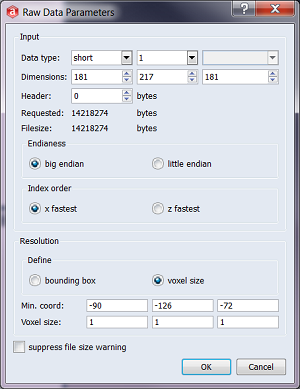

Raw Data Parameters dialog showing the parameters to be entered to load the reference data set. With a voxel size of 1 (mm) in each direction and minimum coordinates of [-90, -126, -72] scaling and position of the reference are fixed.